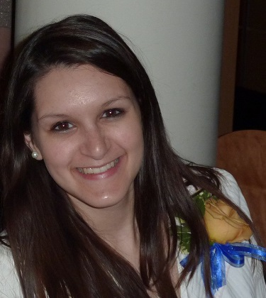

Asha Noonan
Hybrid Mobile App Development Student and Technology Aficionado
Currently
I’m a student at Softstack Factory, due to finish around September 2016. I have eight years of experience in the non-profit and education sectors. Supervisory experience as well as strong collaboration and communication skills. Specialized study and background in mobile app development and information technology. Experience and leadership in working with diverse populations from work with disenfranchised constituents nationally, as well as international volunteer work.
Education
2007-2011
Simmons College Boston, MA
Bachelor’s degree in Integrated Media Communications
Minors in Information Technology and Political Science
2010
Universidad de Guanajuato Guanajuato, Mexico
2009
Universidad San Ignacio de Loyola Cusco, Peru
Technical Skills/Abilities
- HTML and CSS
- JavaScript
- Angular.js
- Express.js
- Node.js
- MongoDB
- MySQL
- MS SQL
- Python
- Windows/Macintosh OS
- Microsoft Office Suite
- Adobe Design Suite
- Google Fusion Tables
- Video Editing
- Social Media Management
- CaptionTube
- Fluent in Spanish
- Public Speaking
Projects
Change Calculator
Orbiting Challenge 3.0
TK Test App
CV
I created this web page to show off my CV.
Achievements
Dean’s List
Presidentital Recognition Award
Member, Chi Tau chapter of Lambda Pi Eta, the National Communications Honor Society
Experience
2011-Present
Freelance Design
Freelance design work to provide identity, print and web design for a variety of clients.
Select work: City Heights Town Council –Website design, creation and maintenance
American Red Cross –Promotional posters and brochures for outreach events, both print and online
Measles Initiative –Created promtional handouts and designed fundraising materials
Craigs Doors, A Home Association, Inc. –Developed and designed logo, business cards and letterhead
Alternative Spring Break: Simmons Builds –Developed and designed logo
The Women’s Center –Logo for The Beauty Campaign
2012-2016
Legal Aid Society of San Diego, Inc.
SSI Advocate
Conducted initial and follow-up interviews of SSI applicants and clients. Prepared forms and gathered documentation for submission to the Social Security Administration. Requested and evaluated medical evidence. Basic and routine factual
investigation and legal research. Prepared memorandums, letters, and standard legal documents. Developed and maintained good working relationships with a variety of healthcare providers and government and social service agencies. Represented
clients at administrative hearings. Assisted with community outreach and education.
2011-2012
American Red Cross, San Diego, CA
AmeriCorps Outreach Associate
Disaster preparedness and CPR/First Aid training for local community groups of up to 400 people. Provided direct service to clients of the American Red Cross as a Disaster Action Team Leader and Disaster Duty Officer. Volunteered
with International Services for Refugee Community Outreach. Special projects included rewriting and redesigning volunteer workshops, creating all visual and print media requested by the chapter.
2010-2011
Simmons College, Boston, MA
Teaching Assistant for Communications Technologies and Visual Communications courses
Taught classes of up to 35 students in units covering iMovie, Photoshop, InDesign and Dreamweaver.
Communications Lab Monitor
Managed budget of $250,000, authorized printing projects, fixed equipment, assisted professors and students, led training workshops.
2010
Democratic National Committee, Washington, DC
New Media Department Intern
Worked with former and current Chairs, director of Communications, and campaign managers to promote online organizing, advocacy, fundraising and communicating through the DNC and OFA websites and social media; awarded lead intern commendation.
2009-2010
The Warming Place Shelter, Amherst, MA
Shift Supervisor
Supervised 5 employees and 15 clients and managed opening and closing of shelter.
2007-2008
Nazareth Family Day Care, Boston, MA
Jumpstart Corps Member
Worked one on one with preschool aged children to integrate literacy and enrich language of children in inner-city schools. Four days a week in the classroom with children aged three through six.
Hobbies
- Classical Indian Dance
- International Travel
- Website design/management
- Tennis